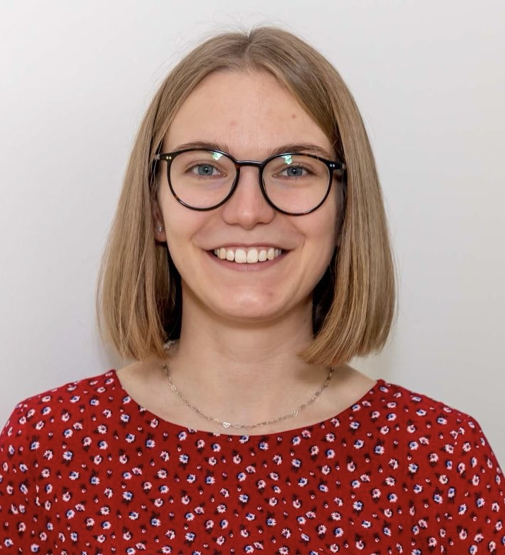
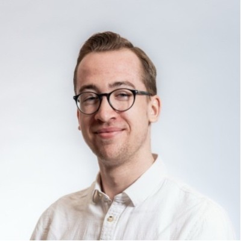
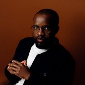
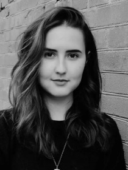
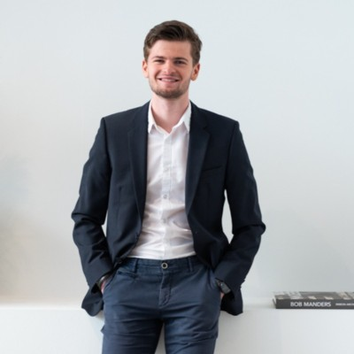
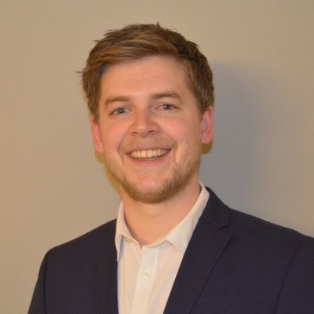
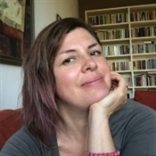

Catrin Böcher
PhD Candidate
Institute of Environmental Sciences (CML), Leiden University
Connecting PhD researchers working on the circular economy transition across the Netherlands.
Join the network
Are you a PhD researcher exploring a topic related to the circular economy at a Dutch university? Would you like to help nurture and grow an exciting circular economy network by participating in networking events, research talks, and excursions? Then we invite you to join the Dutch CE PhD Network.
About
The network is part of the Dutch Academic Network on Circular Economy (DAN‑CE). It connects PhD candidates from Dutch universities conducting research on the circular economy.
Universities represented
… and others.
Access to a growing network of peers passionate about circular economy research.
Share knowledge, ideas, and experiences from your PhD work.
Opportunities to explore synergies and future collaborations.
Broader perspectives through exchange with researchers from very different disciplinary backgrounds.
Events
Organised by the PhD & Postdoc Council of DAN‑CE
A full-day event bringing together PhD and postdoc researchers from all disciplines working on the transition to a circular society in the Netherlands. Living within planetary boundaries while ensuring wellbeing requires real system transformation — across academic disciplines and beyond. This event is a first step toward finding convergence, leverage points, and tensions across the field.
Researchers, policymakers, and NGO representatives on collaboration across academic and non-academic “knowledge silos”, with audience Q&A.
Participants pitch (10 min incl. discussion) or present (20 min incl. discussion) ongoing or recent work.
Hosted by Community Sense — mapping the participant network across academic dimensions, identifying gaps, and co-creating “seeds of change” for an early-career research action agenda in circular society research.
Sign-up opens on 14 September 2026. The registration form will be shared here and in our LinkedIn group.
Supported by the UU Youth Fund and the ACT! consortium.
Council
The PhD Council is a group of early-career researchers from different Dutch universities who plan the events and coordinate the network.

PhD Candidate
Institute of Environmental Sciences (CML), Leiden University

PhD Candidate
Faculty of Architecture and the Built Environment, TU Delft

PhD Candidate
Maastricht Sustainability Institute, School of Business and Economics, Maastricht University

PhD Candidate
Faculty of Behavioural and Social Sciences, University of Groningen

PhD Candidate
Copernicus Institute of Sustainable Development, Utrecht University

PhD Candidate
Faculty of Geosciences, Utrecht University

Postdoctoral Researcher
Utrecht University
PhD Candidate
Institute of Environmental Sciences (CML), Leiden University
Contact
Interested in joining, or want to share an update, event, or opportunity with the network?